{% include JB/setup %}
{% raw %}
<div>
<div class="book" xml:lang="en"><div class="book"><div class="book"><div class="book"><h1 class="title"><a id="gnu3-CHP-7-SECT-5" class="calibre1"></a>Rectangle Editing</h1></div></div></div><p class="copyright">When you mark regions to
<a id="gnu3-CHP-7-ITERM-2361" class="calibre2"></a>
            <a id="gnu3-CHP-7-ITERM-2362" class="calibre2"></a> 
            <a id="gnu3-CHP-7-ITERM-2363" class="calibre2"></a>move or
delete, they always cover the full width of the window. Editing by
region is fine for most of the work that you do in Emacs. But what if
you wanted to edit a table? Regions cover the full width of the
window, so they can't handle columns. Emacs offers
another way to define areas to delete, copy, and move around: using
<span><em class="calibre7">rectangles</em></span>. Rectangles are just what they sound
like: rectangular areas that you define and manipulate using special
rectangle editing commands. Editing with rectangles is useful
whenever you want to move or delete vertical columns of information;
for instance, moving a column of a table or rearranging fields in a
dataset.</p><p class="copyright">For example, let's say you want to edit the
following table, moving the "Hours"
column to the right side. There's no way to do this
using regions, but it's easy to do if you learn some
rectangle editing commands.</p><div class="book"><a id="ch07-34-fm2xml" class="calibre2"></a><table class="calibre8"><colgroup class="calibre9"><col class="calibre10"/></colgroup><tbody class="calibre15"><tr class="calibre12"><td class="calibre17">
                        <p class="copyright">Initial state:</p>
                     </td></tr><tr class="calibre12"><td class="calibre17">
                        <p class="copyright">
                           </p><div class="book"><div class="mediaobject"><a id="I_7_tt217" class="calibre2"></a>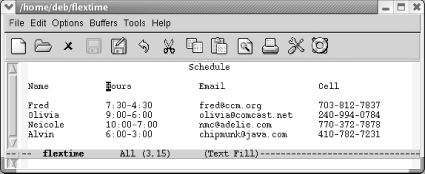</div></div><p class="copyright">
                        </p>
                     </td></tr><tr class="calibre12"><td class="calibre19">
                        <p class="copyright">A flextime schedule.</p>
                     </td></tr></tbody></table></div><p class="copyright">You define a rectangle the same way you define a region; the commands
you use after marking the area tell Emacs whether you want to work
with a region or a rectangle. (This is a good time to let go of your
mouse and use keyboard commands for marking the text. Highlighting
remains horizontal when you're working with
rectangles and will only confuse you as you begin to think
rectangularly. Of course, there's nothing wrong with
using the mouse to move the cursor quickly; just
don't use it to highlight text.)</p><p class="copyright">Before we start working with these columns, select the buffer with
<span><strong class="calibre5">C-x h</strong></span> and untabify it by typing
<span><strong class="calibre5">M-x untabify</strong></span>. Rectangle editing
works best with files that do not contain tab characters.</p><p class="copyright">To define a rectangle, move the cursor to the upper-left corner and
set the mark by pressing <span><strong class="calibre5">C-Space</strong></span>,
then move the cursor to the lower-right corner of the rectangle. Once
you're at the lower-right corner of the rectangle,
move one character farther. Why move one character farther? Remember
that when you define a region, the character that the cursor is on
<span><em class="calibre7">isn't</em></span> part of the region. (The
character that the mark is on <span><em class="calibre7">is</em></span> part of the
region.)</p><p class="copyright">Let's define a rectangle that covers the second
column of our table.</p><div class="book"><a id="ch07-35-fm2xml" class="calibre2"></a><table class="calibre8"><colgroup class="calibre9"><col class="calibre10"/></colgroup><tbody class="calibre15"><tr class="calibre12"><td class="calibre17">
                        <p class="copyright">Move to the <code class="calibre21">H</code> in <code class="calibre21">Hours</code> and type
<span><strong class="calibre5">C-Space</strong></span>
                        </p>
                     </td></tr><tr class="calibre12"><td class="calibre17">
                        <p class="copyright">
                           </p><div class="book"><div class="mediaobject"><a id="I_7_tt218" class="calibre2"></a>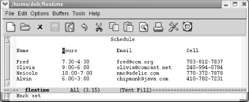</div></div><p class="copyright">
                        </p>
                     </td></tr><tr class="calibre12"><td class="calibre19">
                        <p class="copyright">The mark is set at the upper-left corner of the rectangle to be
moved.</p>
                     </td></tr></tbody></table></div><div class="book"><a id="ch07-36-fm2xml" class="calibre2"></a><table class="calibre8"><colgroup class="calibre9"><col class="calibre10"/></colgroup><tbody class="calibre15"><tr class="calibre12"><td class="calibre17">
                        <p class="copyright">Move the cursor to the space following the bottom-right corner of the
rectangle, the <code class="calibre21">c</code> in <code class="calibre21">chipmunk</code>.</p>
                     </td></tr><tr class="calibre12"><td class="calibre17">
                        <p class="copyright">
                           </p><div class="book"><div class="mediaobject"><a id="I_7_tt219" class="calibre2"></a>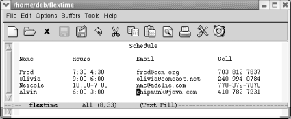</div></div><p class="copyright">
                        </p>
                     </td></tr><tr class="calibre12"><td class="calibre19">
                        <p class="copyright">The cursor follows the bottom-right corner of the rectangle.</p>
                     </td></tr></tbody></table></div><p class="copyright">Now that the rectangle is marked, we want to delete it and then move
it. The command to delete a rectangle so you can retrieve it
elsewhere is <span><strong class="calibre5">C-x</strong></span> 
            <span><strong class="calibre5">r</strong></span> 
            <span><strong class="calibre5">k</strong></span> (for
<span><strong class="calibre5">kill-rectangle</strong></span>).</p><div class="book"><a id="ch07-37-fm2xml" class="calibre2"></a><table class="calibre8"><colgroup class="calibre9"><col class="calibre10"/></colgroup><tbody class="calibre15"><tr class="calibre12"><td class="calibre17">
                        <p class="copyright">Type: <span><strong class="calibre5">C-x r k</strong></span>
                        </p>
                     </td></tr><tr class="calibre12"><td class="calibre17">
                        <p class="copyright">
                           </p><div class="book"><div class="mediaobject"><a id="I_7_tt220" class="calibre2"></a>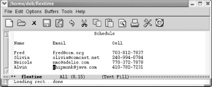</div></div><p class="copyright">
                        </p>
                     </td></tr><tr class="calibre12"><td class="calibre19">
                        <p class="copyright">The rectangle is deleted; it's in a special
rectangle kill buffer.</p>
                     </td></tr></tbody></table></div><p class="copyright">Once again, when you mark a rectangle, you put the cursor on the
upper-left corner, set the mark, then move to the lower-right corner
of the rectangle and over one more space. Emacs expects rectangles to
be rectangles. If necessary, it pads an area with spaces to make up
the straight line on the right side.</p><p class="copyright">You can move anywhere on the screen and reinsert the rectangle last
killed with the <span><strong class="calibre5">yank-rectangle</strong></span>
command, <span><strong class="calibre5">C-x</strong></span> 
            <span><strong class="calibre5">r</strong></span> 
            <span><strong class="calibre5">y</strong></span>. To put
the "Hours" column on the right
side of the table, we move the cursor following the cell phone
column.</p><div class="book"><a id="ch07-38-fm2xml" class="calibre2"></a><table class="calibre8"><colgroup class="calibre9"><col class="calibre10"/></colgroup><tbody class="calibre15"><tr class="calibre12"><td class="calibre17">
                        <p class="copyright">Place the cursor following <code class="calibre21">Cell</code> and press
<span><strong class="calibre5">M-10</strong></span> 
                           <span><strong class="calibre5">Space</strong></span> to move to a good location to paste the
"Hours" column:</p>
                     </td></tr><tr class="calibre12"><td class="calibre17">
                        <p class="copyright">
                           </p><div class="book"><div class="mediaobject"><a id="I_7_tt221" class="calibre2"></a>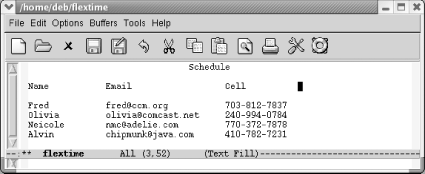</div></div><p class="copyright">
                        </p>
                     </td></tr><tr class="calibre12"><td class="calibre19">
                        <p class="copyright">Move the cursor to where we want to reinsert the rectangle.</p>
                     </td></tr></tbody></table></div><div class="book"><a id="ch07-39-fm2xml" class="calibre2"></a><table class="calibre8"><colgroup class="calibre9"><col class="calibre10"/></colgroup><tbody class="calibre15"><tr class="calibre12"><td class="calibre17">
                        <p class="copyright">Type: <span><strong class="calibre5">C-x r y</strong></span>
                        </p>
                     </td></tr><tr class="calibre12"><td class="calibre17">
                        <p class="copyright">
                           </p><div class="book"><div class="mediaobject"><a id="I_7_tt222" class="calibre2"></a>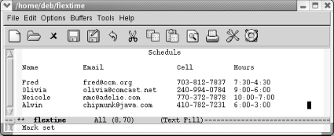</div></div><p class="copyright">
                        </p>
                     </td></tr><tr class="calibre12"><td class="calibre19">
                        <p class="copyright">Emacs inserts the rectangle we killed earlier.</p>
                     </td></tr></tbody></table></div><p class="copyright">Emacs inserts the rectangle exactly where you tell it to. We moved
past the cell phone column and then added some space between the cell
phone and hours columns. Otherwise, Emacs would have blithely
inserted the hours column into the middle of the cell phone column.
Note that there's no equivalent of the kill ring for
rectangles. You can yank only the most recent rectangle.<sup class="calibre6">[<a id="gnu3-CHP-7-FNOTE-4" href="#ftn.gnu3-CHP-7-FNOTE-4" class="calibre2">4</a>]</sup>
         </p><p class="copyright">Killing and yanking rectangles requires practice. Once you get the
hang of the procedure, it is an easy way to edit tables and other
column-dependent material.</p><p class="copyright">A few other commands create blank rectangles. For example,
let's say we want to put four more spaces between
the cell phone and hours columns. To do this, we set the mark, move
to the bottom of the column, move forward four spaces, then type
<span><strong class="calibre5">C-x</strong></span> 
            <span><strong class="calibre5">r</strong></span> 
            <span><strong class="calibre5">o</strong></span> (for
<span><strong class="calibre5">open-rectangle</strong></span>). This command
inserts a blank rectangle and pushes the remaining text to the right.</p><div class="book"><a id="ch07-40-fm2xml" class="calibre2"></a><table class="calibre8"><colgroup class="calibre9"><col class="calibre10"/></colgroup><tbody class="calibre15"><tr class="calibre12"><td class="calibre17">
                        <p class="copyright">Move the cursor to the <code class="calibre21">H</code> in
<code class="calibre21">Hours</code> and type <span><strong class="calibre5">C-Space</strong></span>
                        </p>
                     </td></tr><tr class="calibre12"><td class="calibre17">
                        <p class="copyright">
                           </p><div class="book"><div class="mediaobject"><a id="I_7_tt223" class="calibre2"></a>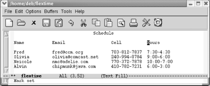</div></div><p class="copyright">
                        </p>
                     </td></tr><tr class="calibre12"><td class="calibre19">
                        <p class="copyright">Emacs sets the mark at the upper-left corner of the rectangle.</p>
                     </td></tr></tbody></table></div><p class="copyright">Now we need to define the amount of space we want to insert. Move
down to the bottom of the rectangle (the
"Alvin" line) and then move to the
hyphen between <code class="calibre21">6:00</code> and <code class="calibre21">3:00</code>.</p><div class="book"><a id="ch07-41-fm2xml" class="calibre2"></a><table class="calibre8"><colgroup class="calibre9"><col class="calibre10"/></colgroup><tbody class="calibre15"><tr class="calibre12"><td class="calibre17">
                        <p class="copyright">Move the cursor following <code class="calibre21">6:00</code>.</p>
                     </td></tr><tr class="calibre12"><td class="calibre17">
                        <p class="copyright">
                           </p><div class="book"><div class="mediaobject"><a id="I_7_tt224" class="calibre2"></a>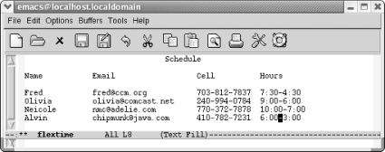</div></div><p class="copyright">
                        </p>
                     </td></tr><tr class="calibre12"><td class="calibre19">
                        <p class="copyright">The lower right corner of the rectangle is defined.</p>
                     </td></tr></tbody></table></div><p class="copyright">Finally, type <span><strong class="calibre5">C-x</strong></span> 
            <span><strong class="calibre5">r</strong></span> 
            <span><strong class="calibre5">o</strong></span> to add
the new space to the table.</p><div class="book"><a id="ch07-42-fm2xml" class="calibre2"></a><table class="calibre8"><colgroup class="calibre9"><col class="calibre10"/></colgroup><tbody class="calibre15"><tr class="calibre12"><td class="calibre17">
                        <p class="copyright">Type <span><strong class="calibre5">C-x r o</strong></span>
                        </p>
                     </td></tr><tr class="calibre12"><td class="calibre17">
                        <p class="copyright">
                           </p><div class="book"><div class="mediaobject"><a id="I_7_tt225" class="calibre2"></a>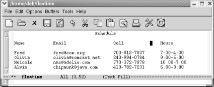</div></div><p class="copyright">
                        </p>
                     </td></tr><tr class="calibre12"><td class="calibre19">
                        <p class="copyright">Emacs inserts a blank rectangle that is four spaces wide. It moves
the rest of the table to the right.</p>
                     </td></tr></tbody></table></div><p class="copyright">The <span><strong class="calibre5">clear-rectangle</strong></span> command wipes
out text, leaving a blank rectangle in its place.
It's just as though you had erased a column on a
blackboard. Like the blackboard column, the text column that is wiped
out is gone, not stored in the rectangle kill buffer. To continue
with our example, let's say that after reviewing the
schedule, all those involved agreed that they'd
rather not have their cell phones listed.</p><div class="book"><a id="ch07-43-fm2xml" class="calibre2"></a><table class="calibre8"><colgroup class="calibre9"><col class="calibre10"/></colgroup><tbody class="calibre15"><tr class="calibre12"><td class="calibre17">
                        <p class="copyright">Move the cursor to the <code class="calibre21">C</code> in
<code class="calibre21">Cell</code> and type <span><strong class="calibre5">C-space</strong></span>.</p>
                     </td></tr><tr class="calibre12"><td class="calibre17">
                        <p class="copyright">
                           </p><div class="book"><div class="mediaobject"><a id="I_7_tt226" class="calibre2"></a>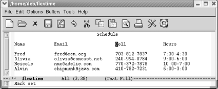</div></div><p class="copyright">
                        </p>
                     </td></tr><tr class="calibre12"><td class="calibre19">
                        <p class="copyright">The upper-left corner of the rectangle to be cleared is marked.</p>
                     </td></tr></tbody></table></div><div class="book"><a id="ch07-44-fm2xml" class="calibre2"></a><table class="calibre8"><colgroup class="calibre9"><col class="calibre10"/></colgroup><tbody class="calibre15"><tr class="calibre12"><td class="calibre17">
                        <p class="copyright">Move to the space following the last phone number and type: <span><strong class="calibre5">C-x r c</strong></span>
                        </p>
                     </td></tr><tr class="calibre12"><td class="calibre17">
                        <p class="copyright">
                           </p><div class="book"><div class="mediaobject"><a id="I_7_tt227" class="calibre2"></a>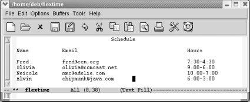</div></div><p class="copyright">
                        </p>
                     </td></tr><tr class="calibre12"><td class="calibre19">
                        <p class="copyright">The <span><strong class="calibre5">clear-rectangle</strong></span> command removes
the "Cell Phone" column and leaves
a blank space in its place.</p>
                     </td></tr></tbody></table></div><p class="copyright">As you can see, the spacing of our table still isn't
perfect; you'd probably want to use the <span><strong class="calibre5">delete-rectangle</strong></span> command<sup class="calibre6">[<a id="gnu3-CHP-7-FNOTE-5" href="#ftn.gnu3-CHP-7-FNOTE-5" class="calibre2">5</a>]</sup> to delete
the extra space between the second and the third columns. To delete
the blank space without storing it, start by moving the cursor to the
space following the longest email address and press <span><strong class="calibre5">C-Space</strong></span> to set the mark, then move to the
opposite corner of the box you want to delete and type <span><strong class="calibre5">C-x</strong></span> 
            <span><strong class="calibre5">r</strong></span>
            <span><strong class="calibre5">d</strong></span>.</p><div class="book"><a id="ch07-45-fm2xml" class="calibre2"></a><table class="calibre8"><colgroup class="calibre9"><col class="calibre10"/></colgroup><tbody class="calibre15"><tr class="calibre12"><td class="calibre17">
                        <p class="copyright">On the header line, move to the column after the longest email
address and press <span><strong class="calibre5">C-Space</strong></span>
                        </p>
                     </td></tr><tr class="calibre12"><td class="calibre17">
                        <p class="copyright">
                           </p><div class="book"><div class="mediaobject"><a id="I_7_tt228" class="calibre2"></a>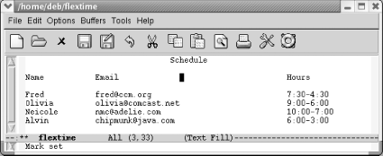</div></div><p class="copyright">
                        </p>
                     </td></tr><tr class="calibre12"><td class="calibre19">
                        <p class="copyright">The upper-left corner of the rectangle to be deleted is marked.</p>
                     </td></tr></tbody></table></div><div class="book"><a id="ch07-46-fm2xml" class="calibre2"></a><table class="calibre8"><colgroup class="calibre9"><col class="calibre10"/></colgroup><tbody class="calibre15"><tr class="calibre12"><td class="calibre17">
                        <p class="copyright">Move a few spaces before 6:00 on the last line and type <span><strong class="calibre5">C-x r d</strong></span>
                        </p>
                     </td></tr><tr class="calibre12"><td class="calibre17">
                        <p class="copyright">
                           </p><div class="book"><div class="mediaobject"><a id="I_7_tt229" class="calibre2"></a>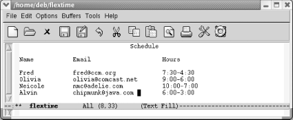</div></div><p class="copyright">
                        </p>
                     </td></tr><tr class="calibre12"><td class="calibre19">
                        <p class="copyright">The <span><strong class="calibre5">delete-rectangle</strong></span> command deletes
the blank space.</p>
                     </td></tr></tbody></table></div><p class="copyright">If you're doing some really fancy table editing,
being able to store several rectangles is helpful. That way, you can
have every column as a rectangle, as well as having a rectangle for
the exact amount of blank space to put between each column. You can
store rectangles in registers by typing <span><strong class="calibre5">C-x r r</strong></span>
            <em class="calibre7"><code class="calibre21">r</code></em> where
<em class="calibre7"><code class="calibre21">r</code></em> is any alphanumeric character, including
punctuation. To insert a rectangle you've stored,
type <span><strong class="calibre5">C-x r i</strong></span>
            <em class="calibre7"><code class="calibre21">r</code></em>. Registers
don't persist between sessions.</p><p class="copyright">
            <a class="calibre2" href="ch07s05.html#gnu3-CHP-7-TABLE-5" title="Table 7-5. Rectangle commands">Table 7-5</a> lists rectangle
<a id="gnu3-CHP-7-ITERM-2364" class="calibre2"></a>
            <a id="gnu3-CHP-7-ITERM-2365" class="calibre2"></a>commands.</p><div class="book"><a id="gnu3-CHP-7-TABLE-5" class="calibre2"></a><p class="title2"><b class="calibre25">Table 7-5. Rectangle commands</b></p><div class="table-contents"><table summary="Rectangle commands" class="calibre8"><colgroup class="calibre9"><col class="calibre10"/><col class="calibre10"/><col class="calibre10"/></colgroup><thead class="calibre11"><tr class="calibre12"><th class="calibre26">
                        <p class="copyright">Keystrokes</p>
                     </th><th class="calibre26">
                        <p class="copyright">Command name</p>
                     </th><th class="calibre27">
                        <p class="copyright">Action</p>
                     </th></tr></thead><tbody class="calibre15"><tr class="calibre12"><td class="calibre28">
                        <p class="copyright">
                           <span><strong class="calibre5">C-x r k</strong></span>
                        </p>
                     </td><td class="calibre28">
                        <p class="copyright">
                           <span><strong class="calibre5">kill-rectangle</strong></span>
                        </p>
                     </td><td class="calibre29">
                        <p class="copyright">Delete a rectangle and store it.</p>
                     </td></tr><tr class="calibre12"><td class="calibre28">
                        <p class="copyright">
                           <span><strong class="calibre5">C-x r d</strong></span>
                        </p>
                     </td><td class="calibre28">
                        <p class="copyright">
                           <span><strong class="calibre5">delete-rectangle</strong></span>
                        </p>
                     </td><td class="calibre29">
                        <p class="copyright">Delete a rectangle and do not store it.</p>
                     </td></tr><tr class="calibre12"><td class="calibre28">
                        <p class="copyright">
                           <span><strong class="calibre5">C-x r y</strong></span>
                        </p>
                     </td><td class="calibre28">
                        <p class="copyright">
                           <span><strong class="calibre5">yank-rectangle</strong></span>
                        </p>
                     </td><td class="calibre29">
                        <p class="copyright">Insert the last rectangle killed.</p>
                     </td></tr><tr class="calibre12"><td class="calibre28">
                        <p class="copyright">
                           <span><strong class="calibre5">C-x r c</strong></span>
                        </p>
                     </td><td class="calibre28">
                        <p class="copyright">
                           <span><strong class="calibre5">clear-rectangle</strong></span>
                        </p>
                     </td><td class="calibre29">
                        <p class="copyright">Using spaces, blank out the area marked as a rectangle and do not
store it.</p>
                     </td></tr><tr class="calibre12"><td class="calibre28">
                        <p class="copyright">
                           <span><strong class="calibre5">C-x r o</strong></span>
                        </p>
                     </td><td class="calibre28">
                        <p class="copyright">
                           <span><strong class="calibre5">open-rectangle</strong></span>
                        </p>
                     </td><td class="calibre29">
                        <p class="copyright">Insert a blank rectangle in the area marked.</p>
                     </td></tr><tr class="calibre12"><td class="calibre28">
                        <p class="copyright">
                           <span><strong class="calibre5">C-x r r r</strong></span>
                        </p>
                     </td><td class="calibre28">
                        <p class="copyright">
                           <span><strong class="calibre5">copy-rectangle-to-register</strong></span>
                        </p>
                     </td><td class="calibre29">
                        <p class="copyright">Copy rectangle to register <em class="calibre7"><code class="calibre21">r</code></em> (where
<em class="calibre7"><code class="calibre21">r</code></em> is any character) .</p>
                     </td></tr><tr class="calibre12"><td class="calibre28">
                        <p class="copyright">
                           <span><strong class="calibre5">C-x r i r</strong></span>
                        </p>
                     </td><td class="calibre28">
                        <p class="copyright">
                           <span><strong class="calibre5">insert-register</strong></span>
                        </p>
                     </td><td class="calibre29">
                        <p class="copyright">Insert rectangle from register <em class="calibre7"><code class="calibre21">r</code></em> (where
<em class="calibre7"><code class="calibre21">r</code></em> is any character).</p>
                     </td></tr><tr class="calibre12"><td class="calibre28">
                        <p class="copyright">(none)</p>
                     </td><td class="calibre28">
                        <p class="copyright">
                           <span><strong class="calibre5">delete-whitespace-rectangle</strong></span>
                        </p>
                     </td><td class="calibre29">
                        <p class="copyright">If a rectangle includes initial whitespace, deletes it, narrowing
rectangle.</p>
                     </td></tr><tr class="calibre12"><td class="calibre28">
                        <p class="copyright">
                           <span><strong class="calibre5">C-x r t string Enter</strong></span>
                        </p>
                     </td><td class="calibre28">
                        <p class="copyright">
                           <span><strong class="calibre5">string-rectangle</strong></span>
                        </p>
                     </td><td class="calibre29">
                        <p class="copyright">Change contents of marked rectangle to
<em class="calibre7"><code class="calibre21">string</code></em> (if
<em class="calibre7"><code class="calibre21">string</code></em> is narrower or wider than
rectangle, dimensions change accordingly).</p>
                     </td></tr><tr class="calibre12"><td class="calibre30">
                        <p class="copyright">(none)</p>
                     </td><td class="calibre30">
                        <p class="copyright">
                           <span><strong class="calibre5">string-insert-rectangle</strong></span>
                        </p>
                     </td><td class="calibre31">
                        <p class="copyright">Prompts for string and inserts rectangle.</p>
                     </td></tr></tbody></table></div></div><br class="book"/><div class="book" xml:lang="en"><div class="book"><div class="book"><div class="book"><h2 class="title1"><a id="gnu3-CHP-7-SECT-5.1" class="calibre1"></a>CUA Rectangle Editing</h2></div></div></div><p class="copyright">If you are familiar with CUA <a id="gnu3-CHP-7-ITERM-2366" class="calibre2"></a>
               <a id="gnu3-CHP-7-ITERM-2367" class="calibre2"></a>
               <a id="gnu3-CHP-7-ITERM-2368" class="calibre2"></a>mode,
which is part of Emacs starting with 21.3.5, you may know that it
provides cut and paste key sequences familiar to Windows users, as in
<span><strong class="calibre5">C-x</strong></span> to cut and <span><strong class="calibre5">C-v</strong></span> to paste (see <a class="calibre2" href="ch13.html" title="Chapter 13. Platform-Specific Considerations">Chapter 13</a>). The second most commonly touted feature
of CUA mode is its superior rectangle support.</p><p class="copyright">We've just looked at a myriad of rectangle commands.
CUA's rectangle support is far simpler. By learning
essentially one command, you can cut and paste rectangles in CUA
mode.</p><p class="copyright">Unfortunately at present, CUA mode support is standard but not
nuanced on Emacs 21.3.5. You either take the whole enchilada or you
don't. To turn it on, select C-x/C-c/C-v cut and
paste (CUA) from the Options menu. If you don't
generally like to use the CUA keybindings for cut and paste, you
might turn this option on only when you are doing rectangle editing.</p><p class="copyright">To select a rectangle, type <span><strong class="calibre5">Shift-Enter</strong></span>. Emacs starts to highlight in a
dark pink color by default. You extend the highlighting with normal
cursor movement keys (the mouse does not work at present).</p><div class="book"><a id="ch07-48-fm2xml" class="calibre2"></a><table class="calibre8"><colgroup class="calibre9"><col class="calibre10"/></colgroup><tbody class="calibre15"><tr class="calibre12"><td class="calibre17">
                           <p class="copyright">Move to the <code class="calibre21">C</code> in <code class="calibre21">Cell</code> and type:
<span><strong class="calibre5">Shift-Enter</strong></span>
                           </p>
                        </td></tr><tr class="calibre12"><td class="calibre17">
                           <p class="copyright">
                              </p><div class="book"><div class="mediaobject"><a id="I_7_tt230" class="calibre2"></a>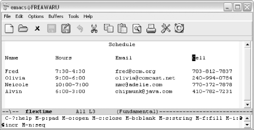</div></div><p class="copyright">
                           </p>
                        </td></tr><tr class="calibre12"><td class="calibre19">
                           <p class="copyright">The upper-left corner of our rectangle is marked (Windows).</p>
                        </td></tr></tbody></table></div><p class="copyright">The minibuffer displays an array of CUA mode rectangle commands. For
now, we'll just mark the rectangle and experiment
with one of these commands momentarily.</p><div class="book"><a id="ch07-49-fm2xml" class="calibre2"></a><table class="calibre8"><colgroup class="calibre9"><col class="calibre10"/></colgroup><tbody class="calibre15"><tr class="calibre12"><td class="calibre17">
                           <p class="copyright">Move the cursor to the last number in Alvin's phone
number.</p>
                        </td></tr><tr class="calibre12"><td class="calibre17">
                           <p class="copyright">
                              </p><div class="book"><div class="mediaobject"><a id="I_7_tt231" class="calibre2"></a>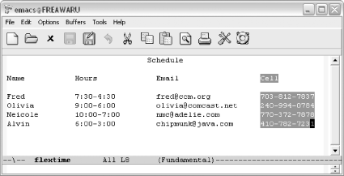</div></div><p class="copyright">
                           </p>
                        </td></tr><tr class="calibre12"><td class="calibre19">
                           <p class="copyright">The rectangle is marked (Windows).</p>
                        </td></tr></tbody></table></div><p class="copyright">Note that the marked rectangle isn't strictly
rectangular in shape. The phone numbers form a true rectangle, but in
order to create a rectangle that includes the column header, we need
to ask CUA mode to "pad" the
rectangle using <span><strong class="calibre5">M-p</strong></span>, one of the
commands listed in the minibuffer earlier.</p><div class="book"><a id="ch07-50-fm2xml" class="calibre2"></a><table class="calibre8"><colgroup class="calibre9"><col class="calibre10"/></colgroup><tbody class="calibre15"><tr class="calibre12"><td class="calibre17">
                           <p class="copyright">Type: <span><strong class="calibre5">M-p</strong></span>
                           </p>
                        </td></tr><tr class="calibre12"><td class="calibre17">
                           <p class="copyright">
                              </p><div class="book"><div class="mediaobject"><a id="I_7_tt232" class="calibre2"></a>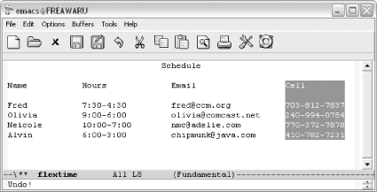</div></div><p class="copyright">
                           </p>
                        </td></tr><tr class="calibre12"><td class="calibre19">
                           <p class="copyright">The pad command makes this a true rectangle (Windows).</p>
                        </td></tr></tbody></table></div><p class="copyright">We can now cut or paste the rectangle using <span><strong class="calibre5">C-x</strong></span> or <span><strong class="calibre5">C-v</strong></span>
respectively. This is just a taste of the CUA mode rectangle
commands. You can explore more of them on your own. We thought you
should be aware of this method as an alternative to the more
keyboard-intensive rectangle commands that have been part of Emacs
for many years.</p></div><div class="book"><br class="book"/><hr class="calibre4"/><div class="book"><p class="copyright"><sup class="calibre6">[<a id="ftn.gnu3-CHP-7-FNOTE-4" href="#gnu3-CHP-7-FNOTE-4" class="calibre2">4</a>] </sup>You can, however, store rectangles in registers, providing the
effective equivalent of the kill ring. More on this shortly.</p></div><div class="book"><p class="copyright"><sup class="calibre6">[<a id="ftn.gnu3-CHP-7-FNOTE-5" href="#gnu3-CHP-7-FNOTE-5" class="calibre2">5</a>] </sup>Like
all Emacs delete commands, <span><strong class="calibre5">delete-rectangle</strong></span> doesn't
store what you delete in the kill ring.</p></div></div></div></div>

{% endraw %}

